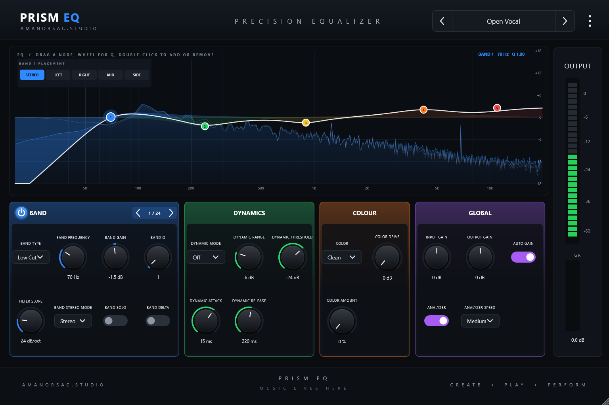

PRISM EQ
Precision Equalizer
Twenty-four bands, and every one can live in the middle, the sides, the left or the right.
A precision equaliser you work by hand. The curve and a coloured shape for each band sit over the live spectrum, input and output together. Drag a node to move a band, use the wheel for Q, double-click to add or remove one.
- Up to 24 bands with eight shapes: bell, low and high shelf, low and high cut, notch, band pass and tilt
- Per-band Stereo, Left, Right, Mid or Side placement, shown as a badge on the node
- Dynamic bands, downward or upward, with the curve moving live as they work; four colour modes from clean to tape
12 presets · Vocals · Drums · Bass · Guitars · Keys · Mix Bus · Master · Utility